컴퓨터활용능력-2급 (2004-05-02 기출문제)
1과목: 컴퓨터 일반
1. 전원을 켰을 때 화면이 표시되지 않을 경우 확인해야 할 사항 중 가장 거리가 먼 것은?
- 연결된 네트워크 연결장치가 장애가 있는지를 확인한다.
- 키보드의 키 중에 <Caps/Lock> 키나 <Num/Lock> 키를 누를 때 키보드에서 해당되는 표시등이 들어오는지 확인한다.
- 모니터와 그래픽카드가 올바르게 연결되어 있는지를 확인한다.
- 모니터와 본체에 전원이 올바르게 공급되었는지를 확인한다.
(정답률: 51%)

2. 다음에서 설명하는 용어로 가장 적절한 것은?
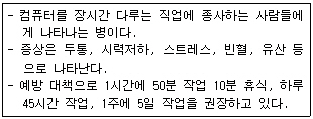
- UPS 증후군
- VDT 증후군
- ADT 증후군
- MELISSA 증후군
(정답률: 78%)
3. 컴퓨터 바이러스의 기능적 특징이라고 보기에 어려운 것은?
- 자기 복제 기능
- 자기 치료 기능
- 은폐 기능
- 파괴 기능
(정답률: 89%)
4. 다음 중 컴퓨터의 기능에 대한 설명으로 가장 옳지 않은 것은?
- 입력 : 컴퓨터 외부의 데이터를 장치를 통해 컴퓨터 내부로 읽어오는 기능이다.
- 출력 : 컴퓨터가 처리한 결과를 장치를 통해 사람에게 보여주는 기능이다.
- 저장 : 컴퓨터에 데이터나 프로그램들을 기억하는 기능이다.
- 연산 : 입력, 출력, 기억들을 제어하고 감독하는 기능이다.
(정답률: 75%)
5. 한글 Windows 98에서 사용하는 단축키에 대한 설명이다. 설명 중 틀린 것은?
- F2 : 선택한 파일/폴더의 이름 변경하기
- F3 : 파일/폴더 찾기로 전환된다.
- F1 : 최신 정보로 고치기
- F8 : 부팅 시 메뉴 표시
(정답률: 84%)
6. 다음 중 메모장에서 문서를 작성하거나 편집할 때 내용으로 옳지 않은 것은?
- 서식이 있는 문서의 편집이나 다른 문서와의 개체 편집이 불가능하다.
- 메모장에서 작성된 파일의 기본적인 확장자는 TXT이다.
- 파일의 크기가 64KB 미만인 파일만 불러오거나 작성할 수 있고, 그 이상의 파일은 다른 프로그램을 이용한다.
- EBCDIC 형식의 문자열을 작성하고 저장한다.
(정답률: 54%)
7. 다음 중 한글 Windows 98에서의 프린터 스풀 기능에 대한 설명으로 가장 옳지 않은 것은?
- 스풀링은 인쇄할 내용을 하드디스크를 거치지 않고 프린터로 전송하기 때문에 효율적이다.
- 프린터가 인쇄중이라도 다른 응용 프로그램을 실행할 수 있다.
- 한 페이지 단위로 스풀링하여 인쇄하는 방법과 인쇄할 문서 전부를 한번에 스풀링한 후 프린터로 전송하여 인쇄하는 방법이 있다.
- 프린터와 같은 저속의 입출력 장치를 CPU와 병행하여 작동시켜 컴퓨터의 전체 효율을 향상시켜 준다.
(정답률: 51%)
8. 아웃룩 익스프레스(Outlook Express)를 통해 전자우편을 발송할 때 사용하는 기능에 대한 설명으로 가장 거리가 먼 것은?
- 참조란은 보내는 사람의 이름을 입력하는 곳이다.
- 파일이나 웹 페이지를 첨부할 수 있다.
- 맞춤법 검사 기능이 있어 오자를 찾아준다.
- 하나의 메일을 둘 이상의 사람에게도 동시에 발송할 수 있다.
(정답률: 60%)
9. 다음은 무엇에 대한 설명인가?
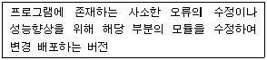
- 셰어웨어(Shareware)
- 알파(Alpha) 버전
- 베타(Beta) 버전
- 패치(Patch) 버전
(정답률: 75%)
10. 인터넷의 IP 주소는 네트워크에 접속할 수 있는 수에 따라 클래스가 구분되는데 150대의 컴퓨터를 가진 소규모 기관에 가장 적합한 클래스는?
- A 클래스
- B 클래스
- C 클래스
- D 클래스
(정답률: 59%)
11. 다음 중 프린터 공유에 대한 설명으로 틀린 내용은?
- 한글 Windows 98의 경우 기본 프로토콜로 NetBEUI를 사용한다. 이는 공유시 컴퓨터이름을 구분하기 위해서이다.
- 프린터를 공유하기 위해서는 [시작]-[설정]-[제어판]을 선택한 후 네트워크 구성탭 안에 [Microsoft 네트워크 파일/프린터 공유 프로그램] 서비스를 추가해야 한다.
- 프린터 공유시 서비스란 용어는 네트워크상의 다른 컴퓨터에서 프린터를 요청하면 자동으로 실행해 주는 백그라운드 프로그램을 말한다.
- 네트워크의 구성탭 안에 [Microsoft 네트워크 파일/프린터 공유 프로그램] 서비스를 추가해 두었기 때문에 [시작]- [설정]-[프린터]를 클릭한 후 공유하고자 하는 프린터 아이콘에서 마우스 오른쪽을 누르고 [공유]를 선택할 필요가 없다.
(정답률: 59%)
12. 백업(Back-Up)에 대한 설명으로 옳지 않은 것은?
- 한글 Windows 98에서 백업 명령의 수행 순서는 [시작]-[프로그램]-[보조 프로그램]-[멀티미디어 도구]-[백업]이다.
- 불의의 사고로부터 데이터를 보호하기 위해 사용한다.
- 한글 Windows 98에서 백업으로 저장된 파일은 백업 프로그램의 복원 메뉴를 이용하여 원상 복구할 수 있다.
- 하드디스크의 파일을 플로피디스크나 테이프 장치로 복사한다.
(정답률: 48%)
13. 다음 중 물리적인 하나의 하드디스크를 용량에 따라 여러 개의 논리적 하드디스크 드라이브로 분할하는 것을 나타내는 용어는?
- 로우레벨 포맷(low-level format)
- 하이레벨 포맷(high-level format)
- 파티션(partition)
- 하드디스크 인터리브(harddisk interleave)
(정답률: 82%)
14. 다음 중 정지 영상 파일 형식으로 가장 거리가 먼 것은 ?
- JPG 파일
- GIF 파일
- BMP 파일
- AVI 파일
(정답률: 71%)
15. 컴퓨터 부팅 후, 윈도우가 실행(Start-up)될 때 자동으로 프로그램이 실행되게 하려면 실행 프로그램의 아이콘을 어디에 복사해 두면 되는가?
- 즐겨찾기
- 시작 프로그램
- 바탕화면
- 작업표시줄
(정답률: 75%)
16. 한글 Windows 98에서 특정 폴더 내의 모든 파일이나 폴더를 선택하는 단축키는 무엇인가?
- [Ctrl]+[C]
- [Ctrl]+[V]
- [Ctrl]+[A]
- [Ctrl]+[B]
(정답률: 84%)
17. 다음 중 인터넷 상에서 상호작용이 가능한 3차원 가상 세계를 표현할 수 있게 해주는 언어는?
- HTML
- VRML
- XML
- Dynamic HTML
(정답률: 64%)
18. 랜덤 액세스 기억장치의 출현은 프로그램 내장형 컴퓨터를 개발하는데 획기적인 역할을 하였다. 이러한 랜덤 액세스 기억장치를 도입한 컴퓨터를 이용하는 경우의 장점으로 가장 적합하지 않은 것은?
- 프로그램과 데이터를 기억장치 내에 수행되는 순서대로 기억시킬 필요가 없다.
- 기억장치 내에서 프로그램과 데이터가 명확히 구분된다.
- 기억시켜 놓은 데이터를 반복해서 사용할 수 있다.
- 기억시켜 놓은 프로그램의 전부 또는 일부분을 반복해서 사용할 수 있다.
(정답률: 41%)
19. 인터넷 웹 사이트의 방문 정보를 기록하는 텍스트 파일로, 이를 이용하여 사용자의 기호 등을 분석할 수 있는 것은 다음 중 어느 것인가?
- 쿠키
- 조각모음
- 패치
- 크래커
(정답률: 81%)
20. 현재 인터넷에서 사용되고 있는 IP 구조는 IPv4이다. 그러나 이 주소 체계는 IP가 부족하여 보완된 차세대 IP 구조인 IPv6가 사용될 예정이다. 이 차세대 IP 구조는 몇 비트로 구성되어 있나?
- 32비트
- 64비트
- 128비트
- 256비트
(정답률: 81%)
2과목: 스프레드시트 일반
21. 다음 중 데이터 양이 많아 기본적으로는 3장으로 인쇄되는 워크시트를 1장으로 인쇄하기 위한 [파일]-[페이지 설정]의 [페이지] 탭의 설정사항으로 옳은 것은?
- 용지 크기
- 시작 페이지
- 자동 맞춤
- 용지 방향
(정답률: 62%)
22. 다음 중 매크로를 기록할 때 매크로 저장 위치의 종류로 옳지 않은 것은?
- 공유 매크로 통합 문서
- 현재 통합 문서
- 개인용 매크로 통합 문서
- 새 통합 문서
(정답률: 66%)
23. 다음 중 워크시트상의 작업에 대한 설명으로 옳지 않은 것은?
- 셀 서식을 설정하려면 <Ctrl> + <1> 키를 누른다.
- 현재 시스템의 날짜를 입력하려면 <Ctrl> + <:> 키를 누른다.
- [A1] 셀을 선택한 후 <Ctrl> + <+> 키를 누르면 [삽입] 대화상자가 표시된다.
- 선택된 영역에 같은 데이터를 입력하려면 <Ctrl> + <Enter> 키를 사용한다.
(정답률: 51%)
24. 다음 중 부분합에 관한 설명으로 옳지 않은 것은?
- [부분합] 대화상자에서 [새로운 값으로 대치]를 설정하면 이미 작성된 부분합에 중복되게 부분합을 작성할 수 있다.
- 부분합은 계산을 하고자 하는 필드를 기준으로 목록들이 미리 정렬되어 있을 필요가 있다.
- 합계 이외에도 최대값, 최소값, 평균 등을 구할 수 있다.
- 많은 양의 데이터 목록에서 다양한 종류의 요약을 만들 수 있다.
(정답률: 61%)
25. 다음 중 매크로를 실행하는 방법에 대한 설명으로 옳지 않은 것은?
- <Alt> + <F7> 키를 눌러 매크로 이름을 선택한 후 실행한다.
- [도구]-[매크로]-[매크로]를 실행한 후 매크로 이름을 선택한 후 실행한다.
- [도구] 메뉴에서 <M> 키를 누른 후 다시 <M> 키를 눌러 매크로 이름을 지정하여 실행한다.
- 그리기 도구모음으로 작성한 그림에 매크로를 지정하여 실행한다.
(정답률: 62%)
26. 다음 중 주어진 표시형식에 대한 설명으로 옳지 않은 것은?
- 0.00 → 6.789를 입력하면 6.79 로 소수점 두 번째 자리까지 표시된다.
- #“대” → 15를 입력하면 15대 로 표시된다.
- h:mm AM/PM → 13:25을 입력하면 1:25 PM 로 표시된다.
- #,, → 25000000을 입력하면 25,000,000 로 표시된다.
(정답률: 61%)
27. 다음 중 차트 편집에 관한 설명으로 옳지 않은 것은?
- 차트의 제목은 차트를 작성한 후에도 수정, 편집할 수 있다.
- 작성된 차트의 데이터의 계열 위치를 행에서 열로 바꾸려면 ‘차트 옵션’ 메뉴에서 가능하다.
- 이미 작성된 범례를 삭제하는 것은 ‘차트 옵션’ 메뉴에서도 가능하다.
- ‘3차원 보기’ 메뉴는 3차원 형태의 차트에서만 실행 가능하다.
(정답률: 45%)
28. 다음 중 직위가 ‘부장’이거나 수당이 ‘200000’ 이상이거나, 총급여액이 ‘1700000’ 미만인 자료를 추출하고자 할 때의 고급 필터의 검색조건으로 옳은 것은?
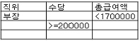
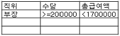
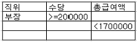
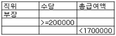
(정답률: 71%)
29. 워크시트에서 작업 중에 10%가 입력되었던 셀의 내용을 지우고 2를 입력하였으나 셀에 2%가 입력되는 현상을 해결하기 위한 설정으로 가장 옳은 것은?
- <Del> 키를 누른다.
- [서식]-[셀]의 [표시 형식]에서 [일반]을 선택한다.
- <Spacebar> 키를 누른다.
- [편집]-[지우기]-[내용]을 선택한다.
(정답률: 70%)
30. 다음 중 인쇄 작업을 위한 페이지설정 사항에 대한 설명으로 옳지 않은 것은?
- 인쇄할 페이지 순서를 위해서 행 우선/열 우선을 지정하여 인쇄할 수 있다.
- 워크시트에 메모가 삽입되어 있으면, 인쇄를 할 때 기본적으로 메모가 같이 인쇄된다.
- 각 페이지에 제목으로 반복되는 행이 있으면 인쇄 제목을 설정할 수 있다.
- 인쇄를 하기 전에 미리보기를 실행하여 여백을 확인할 수 있다.
(정답률: 67%)
31. 아래에 주어진 피벗 테이블의 레이아웃에서 페이지, 행, 열, 데이터의 각 항목에 대한 설정이 옳게 나열된 것은?
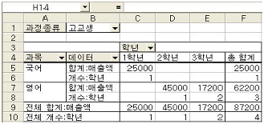
- 과정종류 학년 과목 매출액,학년
- 과목 과정종류 학년 매출액,매출액
- 과정종류 과목 학년 매출액,학년
- 과목 과정종류 학년 매출액
(정답률: 56%)
32. 다음 워크시트 자료에서 수식 =INDEX(A2:G5,2,3)의 계산 결과로 올바른 것은?
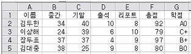
- 40
- 24
- 34
- 39
(정답률: 57%)
33. 다음 워크시트에서 냉장고 제품의 2월 최대 판매값을 [A6] 셀에 구하고자 할 때의 수식으로 옳은 것은?
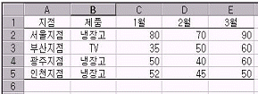
- =DMAX(A1:E5, B1:B2, D1)
- =DMAX(A1:E5, 3, B1:B2)
- =DMAX(B1:E5, 4, B1:B2)
- =DMAX(A1:E5, D1, B1:B2)
(정답률: 47%)
34. 다음과 같은 텍스트 파일을 엑셀에서 불러오는 작업에 관한 설명으로 옳지 않은 것은?
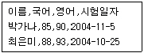
- 쉼표(,)를 구분기호로 4개의 열로 나누어 표시된다.
- [데이터]-[외부 데이터 가져오기]-[텍스트 파일 가져오기]를 실행하면 기존 워크시트에 삽입할 수 있다.
- [파일]-[열기]를 실행해서 파일을 불러오면 텍스트 마법사가 자동으로 실행된다.
- 데이터 서식이 '일반'으로 설정되어 있으면 모든 자료는 텍스트로 변환된다.
(정답률: 53%)
35. 다음 중 Sheet1에서 Sheet1의 [A10] 셀과 다른 워크시트(참조시트명:2월 매출)의 [A1] 셀을 곱하는 수식으로 옳은 것은?
- =A10*'2월 매출'!A1
- =A10*[2월 매출]!A1
- =A1*2월 매출!A1
- =A10*"2월 매출"!A1
(정답률: 46%)
36. 아래의 차트와 같이 데이터 테이블을 차트에 표시하려면 차트마법사의 어느 단계에서 설정하여야 하는가?
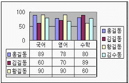
- 1단계
- 2단계
- 3단계
- 4단계
(정답률: 63%)
37. 다음 중 메모와 윗주 삽입에 대한 설명으로 틀린 것은?
- 메모를 화면에 항상 표시되도록 설정할 수 있다.
- 메모를 이용하여 셀에 대한 추가 설명을 할 수 있다.
- 모든 데이터 셀에 대해 메모나 윗주를 삽입할 수 있다.
- 윗주를 입력하려면 메뉴의 [서식]→[윗주 달기]→[편집]을 이용한다.
(정답률: 54%)
38. 다음은 차트에 대한 설명으로 잘못된 것은?
- 차트는 2차원과 3차원 차트로 구분된다.
- 원본 데이터 없이 차트 작성을 수행하면 엑셀에서 제공하는 기본 데이터로 세로 막대형 차트가 만들어진다.
- 차트만 별도로 표시할 수 있는 차트(Chart) 시트를 만들 수 있다.
- 워크시트의 데이터를 막대나 선, 도형, 그림 등을 사용하여 시각적으로 표현한 것이다.
(정답률: 58%)
39. 다음 중 주어진 함수식에 대한 결과 값이 옳지 않은 것은?
- =SQRT(5) , 결과값 : 25
- =AND(4>5, 6>3) , 결과값 : FALSE
- =MODE(5,10,15,10) , 결과값 : 10
- =ROUNDUP(13200,-3) , 결과값 : 14000
(정답률: 50%)
40. 다음 중 셀에 입력하였을 때 문자열로 인식되지 않는 것은?
- '195
- 25.78.9
- $2,750
- 1사분기
(정답률: 57%)